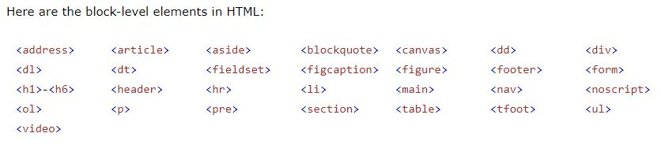
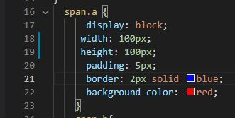
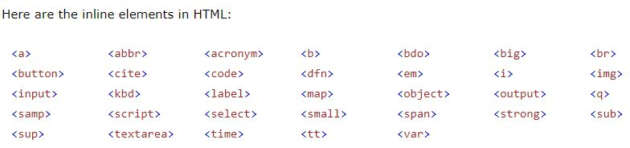
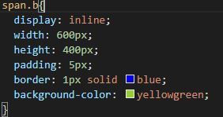
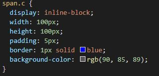

WELCOME TO PADMA'S BLOG
Display inline vs inline blocks
home-index-Page>
Every HTML element has a default method of displaying on the page. This default setting is determined by whether elements are considered block-level or inline
Block-level elements
Block-level elements have the following properties:
Always start on a new line
Take up as much horizontal space as possible (the full width of the container or browser window if there is no container)
Will respect width and height CSS properties
Horizontal and vertical margins both work
Example Tages

Input

Output
one
two
three
four
five
Inline elements
Inline elements have the following properties:
Do not start on a new line
Only use as much horizontal space as required by the content
Do not accept width and height CSS properties
Margins will work horizontally, but not vertically
Padding works on all sides, but the top and bottom may overlap other elements.
Example tages

Input:-

Output:-
one
two
three
four
five
Inline-block elements
The inline-block value is a strange combo of both block and inline.
Inline elements have the following properties:
Elements accept width and height properties
Elements can have vertical and horizontal padding on all sides
Elements do not start on a new line
There will often be a small gap between inline-block elements
Input:-

Output:-
one
two
three
four
five